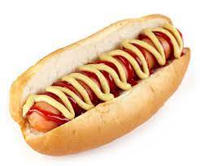

Hotdog

A classic dish for the lazy or stoned
The second easiest recipe in this website.
If you are lazy and have no cooking skills, but knows how to turn on the oven, this recipe is for you!
Ingredients
- 01 sausage
- 01 hotdog bun
- Some ketchup
- Some mustard
Steps
- Fill pan with enough water to cover the three times the height of the sausage
- Place the sausage in water and bring it to a boil
- While waiting for the water to boil, slice the hotdog bun
- Place the boiled sausage inside the sliced bun
- Add ketchup and mustard if you want
- Stick it in your mouth and chew
Back to main